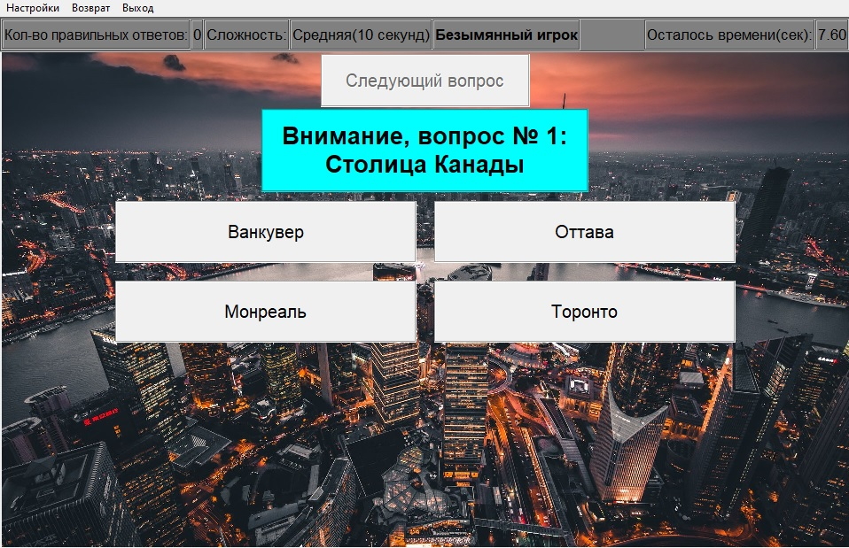
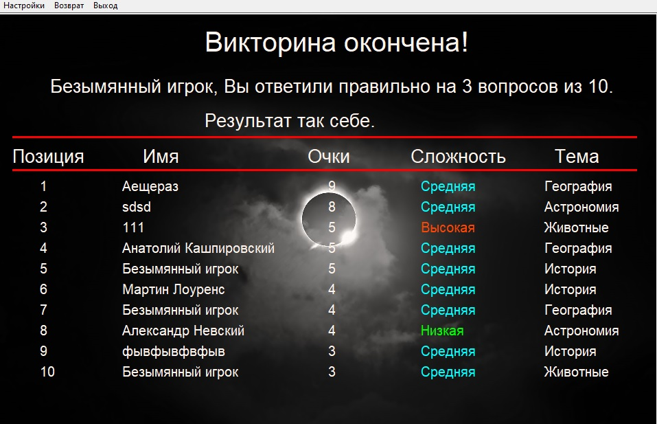

 Во время игры в верхней части экрана располагается панель состояния. На ней отображается количество правильных ответов, которые игрок дал на вопросы, текущий уровень сложности, имя, введенное игроком перед началом игры и время, оставшееся для ответа на текущий вопрос. После появления на экране вопроса, игроку предоставляется на выбор четыре варианта ответа. Если игрок выбирает верный вариант- ему засчитывается правильный ответ.
 В случае выбора правильного ответа,
игроку засчитывается один балл и выводится предложение перейти к следующему вопросу.
Если же игрок выбирает неверный вариант- балл не засчитывается.
В случае, если игрок не успевает ответить на вопрос за промежуток времени,
соответствующий выбранной сложности, балл игроку также не засчитывается, на экран выводится сообщение о том, что время истекло,
варианты ответов становятся недоступными для выбора, а игроку также предлагается перейти к следующему вопросу.
В случае выбора правильного ответа,
игроку засчитывается один балл и выводится предложение перейти к следующему вопросу.
Если же игрок выбирает неверный вариант- балл не засчитывается.
В случае, если игрок не успевает ответить на вопрос за промежуток времени,
соответствующий выбранной сложности, балл игроку также не засчитывается, на экран выводится сообщение о том, что время истекло,
варианты ответов становятся недоступными для выбора, а игроку также предлагается перейти к следующему вопросу.
 Игра считается завершенной, когда игроку будут представлены все вопросы викторины, согласно выбранной теме. После этого выводится экран финала игры, где представлена таблица рекордов. Если игрок набирает достаточное количество баллов для попадания в таблицу, то в ней отображается введенное перед началом игры имя и позиция в таблице. При этом, среди набравших одинаковое количество баллов игроков, выше в таблице будет располагаться тот игрок, который играл на более высокой сложности.
 Лабиринт. Мини-РПГ-игра с прокачкой, поиском сокровищ, сражениями с врагами.
Лабиринт. Мини-РПГ-игра с прокачкой, поиском сокровищ, сражениями с врагами. Блэкджек. Карточная игра по традиционным правилам с зарабатыванием денег и топ-листом.
Блэкджек. Карточная игра по традиционным правилам с зарабатыванием денег и топ-листом. Морской бой. Игра из детства на поле размером 10 на 10 клеток против компьютерного оппонента.
Морской бой. Игра из детства на поле размером 10 на 10 клеток против компьютерного оппонента.